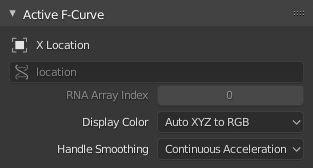
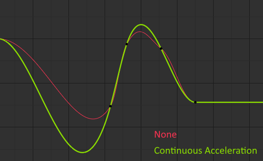
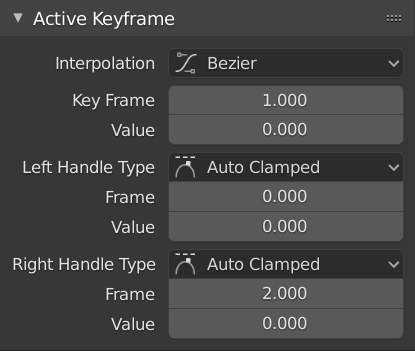
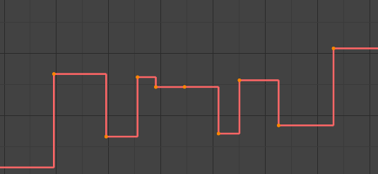
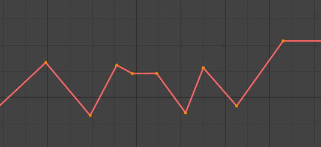
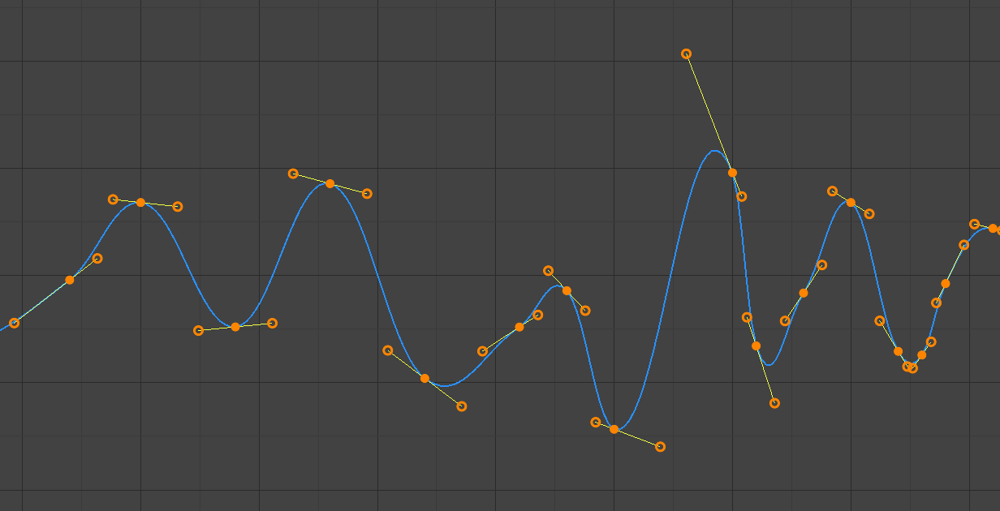
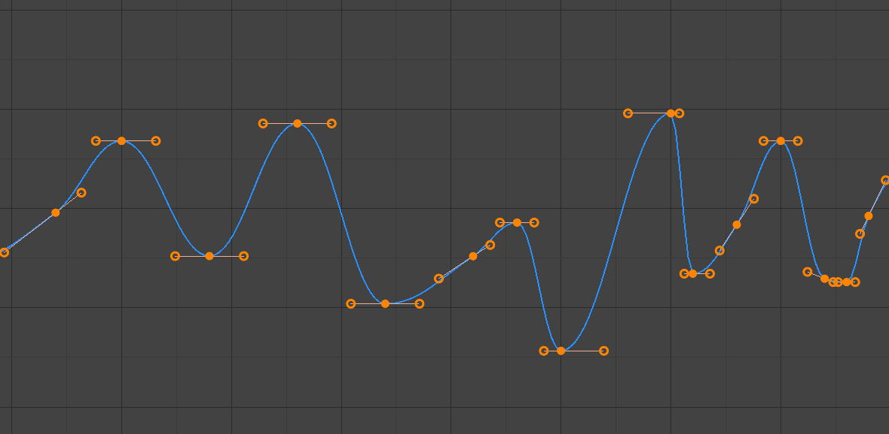
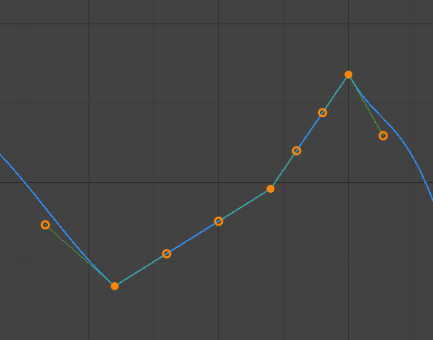
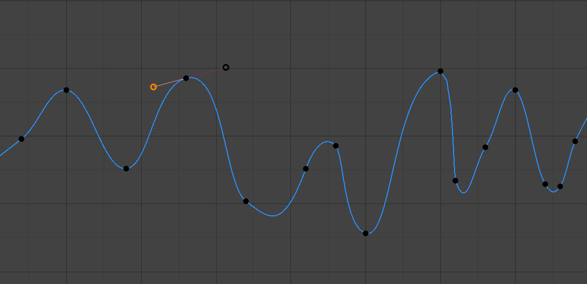
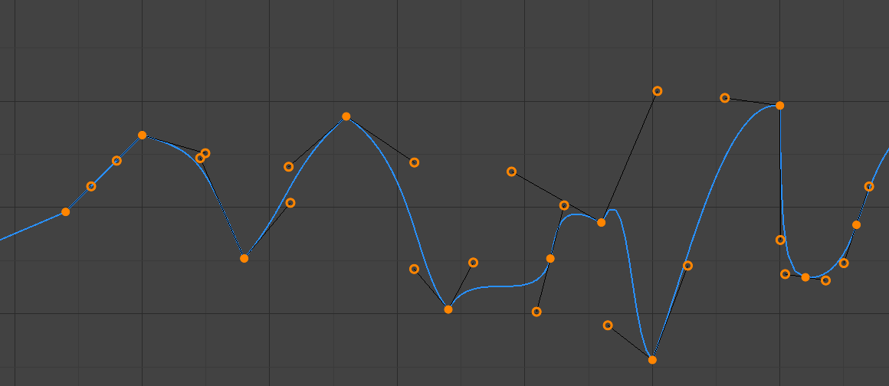

Thuộc tính F-Curve¶
Active F-Curve¶
Tham khảo
- Panel:

Panel Active F-Curve.¶
Panel này hiển thị các thuộc tính của F-Curve đang hoạt động.
- Channel Name
Tên của thuộc tính mà curve tạo animation cho nó.
- Data Path
Đường dẫn dạng lập trình đến thuộc tính.
- RNA Array Index
Chỉ số vào trong thuộc tính, dành cho thuộc tính nhiều giá trị. Ví dụ, thuộc tính Location có ba giá trị (X, Y và Z), nghĩa là nó có thể có ba curve khác nhau với các chỉ số 0, 1 và 2.
- Display Color
Cách xác định màu của F-Curve trong Graph editor.
- Auto Rainbow:
Gán một màu riêng biệt cho từng curve dùng cài đặt này.
- Auto XYZ to RGB:
Nhận diện các curve tạo animation cho tọa độ X/Y/Z và tô chúng màu đỏ/lục/xanh dương tương ứng.
- User Defined:
Cho phép bạn tự chọn màu.
- Handle Smoothing
Cách tính handle Bézier khi dùng loại handle Automatic hoặc Auto Clamped.
- None:
Chỉ các giá trị key liền kề trực tiếp được xét đến khi tính handle.
Phương pháp cũ này rất đơn giản và dễ đoán trước, nhưng chỉ tạo ra được curve thực sự mượt trong những trường hợp giản đơn nhất. Hãy để ý curve màu đỏ trong hình trên có vài chỗ gãy góc ở giữa.
- Continuous Acceleration:
Một hệ phương trình được giải để tránh hoặc giảm thiểu các cú nhảy gia tốc tại mỗi keyframe.
Nó tạo ra các curve mượt hơn nhiều ngay từ đầu, nhưng tất yếu nghĩa là bất kỳ thay đổi nào trong giá trị của key đều có thể ảnh hưởng đến interpolation trên một đoạn curve đáng kể; dù lượng thay đổi suy giảm theo hàm mũ theo khoảng cách. Sự lan truyền thay đổi này bị chặn lại bởi mọi key có handle Free, Aligned hoặc Vector, cũng như bởi các điểm cực trị có handle Auto Clamped.
Trong một số trường hợp, chế độ này cũng có xu hướng vọt quá (overshoot) và dao động nhiều hơn với handle hoàn toàn Automatic (xem hình trên). Vì vậy nên dùng Auto Clamped làm mặc định, và chỉ chuyển sang handle Automatic ở những chỗ cần hành vi đó. Hiệu ứng này cũng có thể được giảm bớt bằng cách thêm các key trung gian.
Mẹo
Xét đến ưu và nhược điểm của từng chế độ, Continuous Acceleration nên phù hợp hơn với limited animation, vốn dùng ít key interpolation và ít tinh chỉnh thủ công. Với các animation có mật độ key dày và được tinh chỉnh kỹ, lợi ích của việc làm mượt có thể không bù đắp được sự gián đoạn quy trình do việc lan truyền thay đổi rộng hơn.

So sánh các chế độ làm mượt handle.¶
Active Keyframe¶
Tham khảo
- Panel:

Panel Active Keyframe.¶
- Interpolation
interpolation sẽ dùng giữa keyframe đang hoạt động và keyframe kế tiếp.
Interpolation
- Constant:

Constant.¶
Curve giữ nguyên giá trị cho đến keyframe kế tiếp, tạo hiệu ứng bậc thang với các thay đổi rất đột ngột. Thường chỉ được dùng trong giai đoạn "blocking" ban đầu của quy trình animation pose-to-pose.
- Linear:

Linear.¶
Curve đi từ keyframe này đến keyframe kế tiếp theo một đường thẳng, giúp tránh thay đổi đột ngột về giá trị nhưng không tránh được về tốc độ. Bằng cách tạo hai keyframe với interpolation Linear và extrapolation, bạn có thể dễ dàng tạo một curve đường thẳng kéo dài vô tận.
- Bézier:

Bézier.¶
Interpolation mặc định, mượt mà cả về giá trị lẫn tốc độ.
Ghi chú
F-Curve của các thuộc tính chỉ nhận giá trị rời rạc sẽ luôn có hình dạng bậc thang, bất kể bạn chọn tùy chọn nào.
Easing (by strength)
Một bộ interpolation chuyên dùng để tăng tốc hoặc giảm tốc một giá trị, "easing" nó từ trạng thái đứng yên sang trạng thái chuyển động hoặc ngược lại.
Xem thêm
Để biết thêm thông tin và xem một số bản demo trực tiếp, hãy xem easings.net và Robert Penner's Easing Functions.
Dynamic Effects
Các loại easing bổ sung này mô phỏng (giả) các hiệu ứng dựa trên vật lý như nảy bật.
- Back
Với Ease In, giá trị ban đầu đi ra xa mục tiêu rồi lao nhanh về phía nó. Với Ease Out, giá trị đi về phía mục tiêu, vọt qua nó, rồi quay lại.
- Back
Độ lớn và hướng (tức là phía trên/dưới curve) của phần vọt quá.
- Bounce
Khiến giá trị nảy bật vài lần với độ suy giảm theo hàm mũ, giống như quả bóng tennis được thả xuống sàn.
- Elastic
Khiến giá trị vọt qua mục tiêu, rồi bật lại và hụt xuống dưới mục tiêu, rồi lại vọt qua... với cường độ giảm dần cho đến khi cuối cùng ổn định.
- Amplitude
Giá trị ban đầu vọt qua mục tiêu bao xa.
- Period
Khoảng thời gian giữa mỗi lần dao động.


- Easing
Tùy chọn này chỉ áp dụng cho các nhóm Easing và Dynamic Effects ở trên.
- Automatic Easing:
Tự động chọn loại phổ biến nhất: Ease In khi dùng một trong các interpolation Easing, và Ease Out khi dùng một trong các Dynamic Effects.
- Ease In:
Giá trị tăng tốc, di chuyển chậm ở đầu đoạn curve và nhanh dần về cuối.
- Ease Out:
Giá trị giảm tốc, di chuyển nhanh ở đầu đoạn curve và chậm dần về cuối.
- Ease In Out:
Giá trị di chuyển chậm ở đầu, nhanh dần về giữa, rồi lại chậm dần về cuối.
- Key Frame
Frame của keyframe đang hoạt động.
- Value
Giá trị của keyframe đang hoạt động.
- Left/Right Handle Type
Khi interpolation của keyframe được đặt thành Bézier, hình dạng của curve xung quanh nó chịu ảnh hưởng bởi các handle của nó. Mỗi handle có loại riêng, quyết định việc (và cách) Blender tự động đặt vị trí của nó hay không, và nếu không thì bạn có bao nhiêu tự do khi tự định vị nó.
Bạn có thể đổi loại handle theo nhiều cách: dùng các danh sách thả xuống này trong Sidebar; qua menu ; hoặc nhấn V rồi chọn từ menu pop-up.
Nếu muốn thay đổi vị trí của một handle tự động, cứ kéo nó; bạn không cần phải đổi loại của nó trước.
- Automatic:

Handle Auto.¶
Handle tự động tạo ra curve mượt mà.
- Auto Clamped:

Handle Auto Clamped.¶
Handle tự động bị kẹp để tránh vọt quá giá trị và tránh đổi chiều curve giữa các keyframe (hình chữ S).
- Vector:

Handle Vector.¶
Handle tự động tạo ra các đoạn curve thẳng (giống interpolation tuyến tính).
- Aligned:

Handle Aligned.¶
Handle thủ công, nhưng bị khóa với nhau để luôn chỉ về hai hướng đối diện nhau. Điều này tạo ra curve luôn mượt tại điểm điều khiển.
- Free:

Handle Free.¶
Handle thủ công có thể di chuyển độc lập, và do đó có thể tạo ra sự đổi hướng gấp.


- Frame, Value
Frame và giá trị của handle trái/phải của keyframe đang hoạt động.